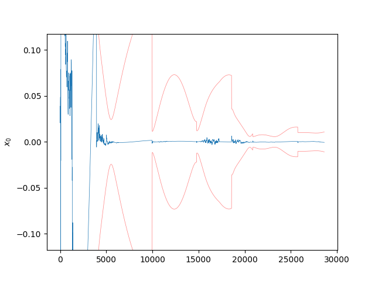
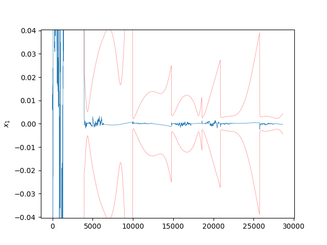
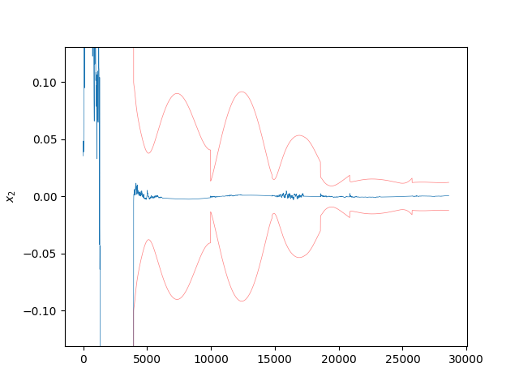
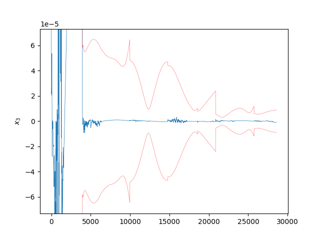
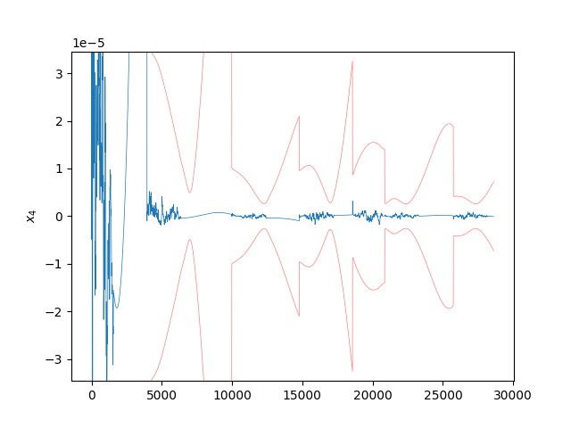
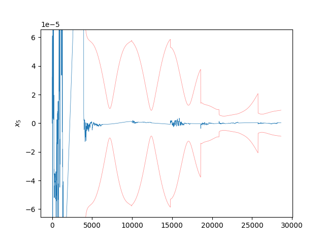
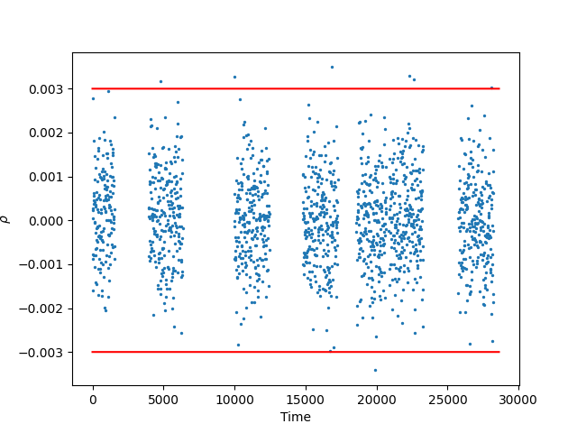
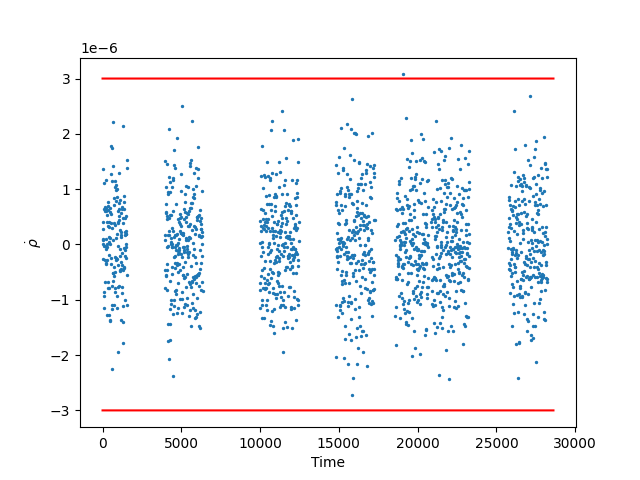

Note
Click here to download the full example code
Unscented Kalman Filter Example
- 
- 
- 
- 
- 
- 
- 
- 
Progress: 0%| | 0/2862 [00:00<?, ?it/s]
Progress: 0%| | 0/2862 [00:00<?, ?it/s]
Progress: 1%| | 25/2862 [00:00<00:11, 244.61it/s]
Progress: 2%|1 | 50/2862 [00:00<00:11, 246.43it/s]
Progress: 3%|2 | 75/2862 [00:01<00:11, 247.44it/s]
Progress: 3%|3 | 100/2862 [00:01<00:11, 246.70it/s]
Progress: 4%|4 | 125/2862 [00:01<00:11, 244.46it/s]
Progress: 5%|5 | 150/2862 [00:01<00:11, 243.54it/s]
Progress: 6%|6 | 176/2862 [00:01<00:10, 248.64it/s]
Progress: 7%|7 | 208/2862 [00:01<00:09, 268.71it/s]
Progress: 8%|8 | 240/2862 [00:01<00:09, 282.55it/s]
Progress: 9%|9 | 271/2862 [00:01<00:08, 289.63it/s]
Progress: 11%|# | 303/2862 [00:01<00:08, 296.57it/s]
Progress: 12%|#1 | 334/2862 [00:02<00:08, 298.89it/s]
Progress: 13%|#2 | 365/2862 [00:02<00:08, 301.86it/s]
Progress: 14%|#3 | 396/2862 [00:02<00:08, 295.40it/s]
Progress: 15%|#4 | 426/2862 [00:02<00:09, 267.83it/s]
Progress: 16%|#5 | 454/2862 [00:02<00:09, 257.36it/s]
Progress: 17%|#6 | 481/2862 [00:02<00:09, 256.30it/s]
Progress: 18%|#7 | 507/2862 [00:02<00:09, 256.21it/s]
Progress: 19%|#8 | 533/2862 [00:02<00:09, 252.76it/s]
Progress: 20%|#9 | 559/2862 [00:02<00:09, 253.94it/s]
Progress: 20%|## | 585/2862 [00:03<00:09, 252.40it/s]
Progress: 21%|##1 | 611/2862 [00:03<00:08, 253.31it/s]
Progress: 22%|##2 | 637/2862 [00:03<00:08, 255.04it/s]
Progress: 23%|##3 | 665/2862 [00:03<00:08, 261.84it/s]
Progress: 24%|##4 | 696/2862 [00:03<00:07, 274.20it/s]
Progress: 25%|##5 | 727/2862 [00:03<00:07, 282.66it/s]
Progress: 26%|##6 | 758/2862 [00:03<00:07, 289.32it/s]
Progress: 28%|##7 | 789/2862 [00:03<00:07, 293.68it/s]
Progress: 29%|##8 | 820/2862 [00:03<00:06, 296.32it/s]
Progress: 30%|##9 | 851/2862 [00:03<00:06, 297.50it/s]
Progress: 31%|### | 881/2862 [00:04<00:06, 293.71it/s]
Progress: 32%|###1 | 911/2862 [00:04<00:06, 287.47it/s]
Progress: 33%|###2 | 940/2862 [00:04<00:06, 282.30it/s]
Progress: 34%|###3 | 970/2862 [00:04<00:06, 286.49it/s]
Progress: 35%|###4 | 1000/2862 [00:04<00:06, 288.79it/s]
Progress: 36%|###5 | 1029/2862 [00:04<00:06, 274.11it/s]
Progress: 37%|###6 | 1057/2862 [00:04<00:06, 266.78it/s]
Progress: 38%|###7 | 1084/2862 [00:04<00:06, 259.22it/s]
Progress: 39%|###8 | 1111/2862 [00:04<00:06, 255.41it/s]
Progress: 40%|###9 | 1137/2862 [00:05<00:07, 245.97it/s]
Progress: 41%|#### | 1162/2862 [00:05<00:07, 233.42it/s]
Progress: 41%|####1 | 1187/2862 [00:05<00:07, 236.04it/s]
Progress: 42%|####2 | 1214/2862 [00:05<00:06, 242.91it/s]
Progress: 43%|####3 | 1240/2862 [00:05<00:06, 245.95it/s]
Progress: 44%|####4 | 1270/2862 [00:05<00:06, 260.86it/s]
Progress: 45%|####5 | 1301/2862 [00:05<00:05, 274.40it/s]
Progress: 47%|####6 | 1333/2862 [00:05<00:05, 285.37it/s]
Progress: 48%|####7 | 1362/2862 [00:05<00:05, 285.72it/s]
Progress: 49%|####8 | 1391/2862 [00:05<00:05, 282.57it/s]
Progress: 50%|####9 | 1420/2862 [00:06<00:05, 282.51it/s]
Progress: 51%|##### | 1449/2862 [00:06<00:05, 281.15it/s]
Progress: 52%|#####1 | 1478/2862 [00:06<00:04, 282.75it/s]
Progress: 53%|#####2 | 1507/2862 [00:06<00:04, 271.79it/s]
Progress: 54%|#####3 | 1535/2862 [00:06<00:05, 263.36it/s]
Progress: 55%|#####4 | 1562/2862 [00:06<00:05, 259.66it/s]
Progress: 56%|#####5 | 1589/2862 [00:06<00:04, 259.91it/s]
Progress: 56%|#####6 | 1616/2862 [00:06<00:04, 253.51it/s]
Progress: 57%|#####7 | 1642/2862 [00:06<00:04, 252.68it/s]
Progress: 58%|#####8 | 1668/2862 [00:07<00:04, 242.93it/s]
Progress: 59%|#####9 | 1693/2862 [00:07<00:04, 244.26it/s]
Progress: 60%|###### | 1718/2862 [00:07<00:04, 245.35it/s]
Progress: 61%|######1 | 1747/2862 [00:07<00:04, 256.59it/s]
Progress: 62%|######2 | 1778/2862 [00:07<00:04, 270.05it/s]
Progress: 63%|######3 | 1809/2862 [00:07<00:03, 279.38it/s]
Progress: 64%|######4 | 1839/2862 [00:07<00:03, 282.86it/s]
Progress: 65%|######5 | 1868/2862 [00:07<00:03, 282.47it/s]
Progress: 66%|######6 | 1897/2862 [00:07<00:03, 262.51it/s]
Progress: 67%|######7 | 1924/2862 [00:08<00:03, 251.10it/s]
Progress: 68%|######8 | 1950/2862 [00:08<00:03, 247.27it/s]
Progress: 69%|######9 | 1976/2862 [00:08<00:03, 249.12it/s]
Progress: 70%|######9 | 2002/2862 [00:08<00:03, 250.04it/s]
Progress: 71%|####### | 2028/2862 [00:08<00:03, 251.30it/s]
Progress: 72%|#######1 | 2054/2862 [00:08<00:03, 252.59it/s]
Progress: 73%|#######2 | 2082/2862 [00:08<00:03, 259.69it/s]
Progress: 74%|#######3 | 2109/2862 [00:08<00:02, 257.97it/s]
Progress: 75%|#######4 | 2135/2862 [00:08<00:02, 255.30it/s]
Progress: 76%|#######5 | 2161/2862 [00:08<00:02, 244.69it/s]
Progress: 76%|#######6 | 2187/2862 [00:09<00:02, 246.64it/s]
Progress: 77%|#######7 | 2212/2862 [00:09<00:02, 244.83it/s]
Progress: 78%|#######8 | 2238/2862 [00:09<00:02, 246.71it/s]
Progress: 79%|#######9 | 2264/2862 [00:09<00:02, 248.20it/s]
Progress: 80%|######## | 2290/2862 [00:09<00:02, 249.93it/s]
Progress: 81%|######## | 2316/2862 [00:09<00:02, 250.67it/s]
Progress: 82%|########1 | 2343/2862 [00:09<00:02, 255.86it/s]
Progress: 83%|########2 | 2373/2862 [00:09<00:01, 268.33it/s]
Progress: 84%|########3 | 2402/2862 [00:09<00:01, 273.90it/s]
Progress: 85%|########4 | 2430/2862 [00:09<00:01, 273.92it/s]
Progress: 86%|########5 | 2461/2862 [00:10<00:01, 283.62it/s]
Progress: 87%|########7 | 2492/2862 [00:10<00:01, 290.56it/s]
Progress: 88%|########8 | 2524/2862 [00:10<00:01, 297.25it/s]
Progress: 89%|########9 | 2555/2862 [00:10<00:01, 298.46it/s]
Progress: 90%|######### | 2585/2862 [00:10<00:00, 293.14it/s]
Progress: 91%|#########1| 2615/2862 [00:10<00:00, 279.80it/s]
Progress: 92%|#########2| 2644/2862 [00:10<00:00, 267.77it/s]
Progress: 93%|#########3| 2671/2862 [00:10<00:00, 257.60it/s]
Progress: 94%|#########4| 2697/2862 [00:10<00:00, 254.04it/s]
Progress: 95%|#########5| 2723/2862 [00:11<00:00, 250.46it/s]
Progress: 96%|#########6| 2749/2862 [00:11<00:00, 243.68it/s]
Progress: 97%|#########6| 2774/2862 [00:11<00:00, 235.71it/s]
Progress: 98%|#########7| 2799/2862 [00:11<00:00, 237.82it/s]
Progress: 99%|#########8| 2825/2862 [00:11<00:00, 242.13it/s]
Progress: 100%|#########9| 2856/2862 [00:11<00:00, 259.79it/s]
Progress: 100%|##########| 2862/2862 [00:11<00:00, 246.42it/s]
Time Elapsed: 11.616323232650757
7 8 9 10 11 12 13 14 15 16 17 18 19 20 21 22 23 24 25 26 27 28 29 30 31 32 33 34 35 36 37 38 39 40 41 42 43 44 45 46 47 48 49 50 51 52 53 54 55 56 57 58 59 60 61 62 63 64 65 66 67 68 69 70 71 72 73 74 75 76 77 78 79 80 81 82 83 84 85 86 87 88 89 90 91 92 93 94 95 96 97 98 99 100 101 102 103 104 105 106 | import time
import matplotlib.pyplot as plt
import numpy as np
from scipy.integrate import solve_ivp
import StatOD
from StatOD.data import get_measurements
from StatOD.dynamics import *
from StatOD.filters import *
from StatOD.measurements import *
from StatOD.visualizations import *
from StatOD.constants import *
def main():
ep = EarthParams()
cart_state = np.array([-3515.4903270335103, 8390.716310243395, 4127.627352553683,
-4.357676322178153, -3.3565791387645487, 3.111892927869902])
t, Y, X_stations_ECI = get_measurements("Data/Measurements/range_rangerate_w_J2_w_noise.data")
# Decrease scenario length
M_end = len(t) // 5
t = t[:M_end]
Y = Y[:M_end]
# Initialize state and filter parameters
dx0 = np.array([0.1, 0.0, 0.0, 1E-4, 0.0, 0.0])
x0 = cart_state + dx0
P_diag = np.array([1, 1, 1, 1E-3, 1E-3, 1E-3])**2
R_diag = np.array([1E-3, 1E-6])**2
P0 = np.diag(P_diag)
R0 = np.diag(R_diag)
t0 = 0.0
# Initialize Process Noise
Q0 = np.eye(3) * 5e-8 ** 2
Q_args = []
Q_fcn = process_noise(x0, Q0, get_Q, Q_args, use_numba=False)
# Initialize Dynamics and Measurements
f_args = np.array([ep.R, ep.mu, ep.J2])
f, dfdx = dynamics(x0, f_J2, f_args)
f_dict = {
"f": f,
"dfdx": dfdx,
"f_args": f_args,
"Q_fcn": Q_fcn,
"Q": Q0,
"Q_args": Q_args,
}
h_args = X_stations_ECI[0]
h, dhdx = measurements(x0, h_rho_rhod, h_args)
h_dict = {'h': h, 'dhdx': dhdx, 'h_args': h_args}
#########################
# Generate f/h_args_vec #
#########################
f_args_vec = np.full((len(t), len(f_args)), f_args)
h_args_vec = X_stations_ECI
R_vec = np.repeat(np.array([R0]), len(t), axis=0)
##############
# Run Filter #
##############
alpha = 1E-3
beta = 2.0
kappa = 0.0
start_time = time.time()
logger = FilterLogger(len(x0), len(t))
filter = UnscentedKalmanFilter(t0, x0, dx0, P0, alpha, kappa, beta, f_dict, h_dict, logger=logger)
filter.run(t, Y[:,1:], R_vec, f_args_vec, h_args_vec)
print("Time Elapsed: " + str(time.time() - start_time))
##################################
# Gather measurement predictions #
##################################
package_dir = os.path.dirname(StatOD.__file__) + "/../"
with open(package_dir + 'Data/Trajectories/trajectory_J2.data', 'rb') as f:
traj_data = pickle.load(f)
x_truth = traj_data['X'][:M_end]
y_hat_vec = np.zeros((len(t), 2))
for i in range(len(t)):
y_hat_vec[i] = filter.predict_measurement(logger.x_hat_i_plus[i], h_args_vec[i])
directory = "Plots/" + filter.__class__.__name__ + "/"
y_labels = np.array([r'$\rho$', r'$\dot{\rho}$'])
vis = VisualizationBase(logger, directory, False)
vis.plot_state_errors(x_truth)
vis.plot_residuals(Y[:,1:], y_hat_vec, R_vec, y_labels)
plt.show()
if __name__ == "__main__":
main()
|
Total running time of the script: ( 0 minutes 16.404 seconds)